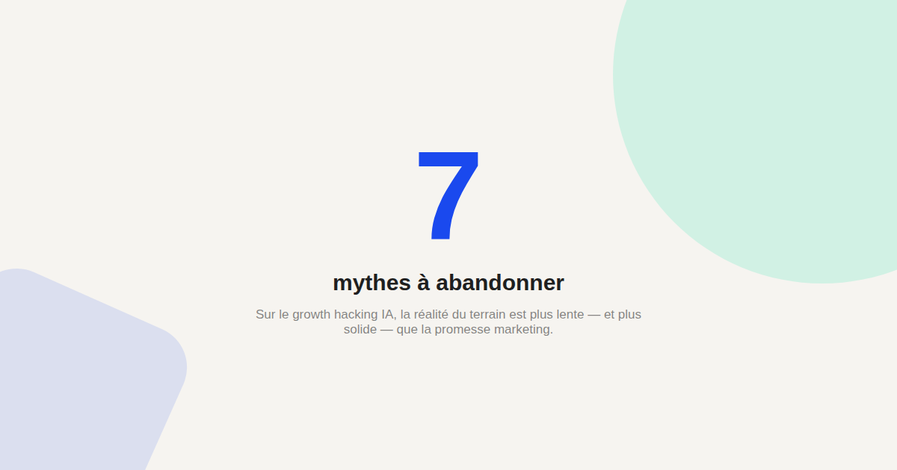

7 mythes sur le growth hacking IA qui coûtent cher aux équipes marketing
Le terme « growth hacking IA » attire toutes les promesses de croissance instantanée — et autant de déceptions quand la réalité rattrape le discours commercial. Voici les 7 mythes que j'entends le plus souvent en clientèle, et ce qui les remplace concrètement.

Le mot « hacking » dans « growth hacking IA » laisse entendre un raccourci miracle. Dans la réalité des missions que j'accompagne, les équipes qui obtiennent des résultats durables avec l'IA sont celles qui ont d'abord une stratégie growth solide — l'IA accélère l'exécution, elle ne la remplace pas. Voici les mythes qui font le plus de dégâts.
Mythe n°1 : l'IA trouve la stratégie growth à votre place
Une IA générative peut proposer des idées de campagnes ou de tests à partir d'un contexte donné, mais elle ne connaît ni votre marché, ni vos contraintes internes, ni votre historique d'essais passés — sauf si vous les lui fournissez explicitement. Sans cadrage stratégique humain en amont, elle produit des idées génériques qui ressemblent à celles de n'importe quel concurrent ayant posé la même question.
Mythe n°2 : plus d'automatisation égale plus de croissance
Automatiser un mauvais processus le rend simplement mauvais plus vite. Avant d'automatiser un scénario d'emailing ou un reporting avec l'IA, la question à se poser est toujours la même : ce processus produit-il déjà de la valeur manuellement ? Si la réponse est non, l'automatisation amplifie le problème au lieu de le résoudre.
Mythe n°3 : un agent IA connaît vos données mieux qu'un humain
Un agent IA connecté à vos outils via un connecteur MCP peut lire vos données bien plus vite qu'un humain, mais il ne sait pas d'emblée qu'un pic de trafic un jour donné correspond à une campagne presse ponctuelle plutôt qu'à une vraie tendance — ce contexte métier doit être communiqué, sans quoi l'analyse produite reste littérale et parfois trompeuse.
Mythe n°4 : les prompts magiques existent
Il n'existe pas de formule secrète qui transforme un prompt vague en résultat exceptionnel. La qualité d'un prompt marketing dépend du contexte fourni (audience, ton, exemples, contraintes), pas d'une formule ésotérique trouvée sur les réseaux sociaux — voir mon analyse des erreurs de prompt les plus fréquentes pour creuser ce point.
Mythe n°5 : l'IA générative remplace le SEO traditionnel
La visibilité dans les réponses des IA génératives (le GEO) s'ajoute au SEO classique, elle ne le remplace pas. Un site mal structuré techniquement ou sans autorité de contenu réelle ne sera pas mieux traité par ChatGPT ou Perplexity que par Google — les deux logiques se recoupent largement plus qu'elles ne s'opposent.
Mythe n°6 : il faut être développeur pour tirer parti de l'IA en marketing
La plupart des connecteurs MCP officiels (Google Analytics, Semrush, HubSpot, Notion) se branchent aujourd'hui par une authentification classique depuis les réglages de l'assistant IA, sans écrire une ligne de code — voir le détail dans le Kit MCP Marketing. La barrière technique a beaucoup baissé en un an.
Mythe n°7 : un seul outil IA suffit pour tout faire
Entre la rédaction, l'analyse de données, le reporting et la création visuelle, les besoins sont trop différents pour un outil unique. La plupart des équipes growth qui fonctionnent bien combinent plusieurs outils spécialisés plutôt qu'une seule plateforme censée tout faire.
FAQ
Le growth hacking IA est-il une vraie discipline ou un effet de mode ?
C'est une évolution réelle des pratiques de growth marketing classique, où l'IA accélère l'exécution de tests et l'analyse de données. Le terme « hacking » entretient parfois une promesse de raccourci qui ne correspond pas à la réalité du travail nécessaire.
Combien de temps pour voir des résultats avec le growth marketing IA ?
Cela dépend entièrement de la maturité de la stratégie growth existante avant l'introduction de l'IA. L'IA accélère l'exécution d'une stratégie déjà pertinente ; elle ne raccourcit pas le temps nécessaire pour définir cette stratégie.
Faut-il un budget important pour démarrer ?
Non : la plupart des connecteurs et assistants IA cités dans cet article ont une offre d'entrée accessible. Le vrai coût est souvent le temps de cadrage nécessaire avant l'automatisation, pas l'abonnement aux outils.
Envie d'un vrai diagnostic avant de vous lancer dans le growth hacking IA ?
Pour aller plus loin, voir la page MCP pour le marketing, la page GEO, et la page Growth IA pour petites équipes.
Pour continuer sur ce sujet.